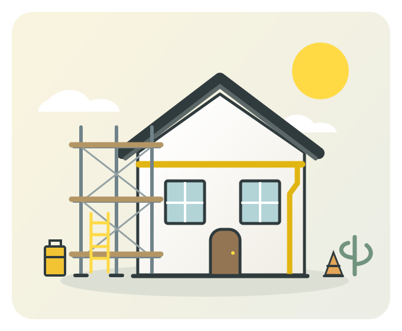

01
足場工事
修繕・リフォームに必要な足場の設置・解体に対応します。
設置・解体HOME REPAIR & RENOVATION
足場・雨樋・大工工事から、各種修繕・リフォームまで。
建物の点検から修理・施工まで、CREAMにご相談ください。
工事のみのご相談も承ります。

OUR WORK
気になる破損や、直したい場所。
建物の状態とご希望に合わせてご相談いただけます。
修繕・リフォームに必要な足場の設置・解体に対応します。
設置・解体雨樋の交換・補修、破損箇所の点検。気になる箇所をご相談ください。
交換・補修・点検木部の補修や住まいの改修など、建物に合わせた大工工事に対応します。
木部補修・改修建物の状態とご希望に合わせて、修理・改修の内容をご相談いただけます。
修理・改修内容・費用は、お見積もりをご確認いただいたうえで決定します。
まずは相談するHOW IT WORKS
内容を確認しながら、順に進めます。
気になる箇所とご希望を、メール・Instagramでお知らせください。
ご相談内容に合わせて、現地確認の日程や必要な情報をご案内します。
工事の内容と費用をご説明します。ご不明な点もご相談ください。
内容をご確認いただいたうえで、工事の日程を調整します。
OUR PHILOSOPHY
住まいの困りごとにも、ビジネスの課題にも。
お客様の話を聞き、内容を確認し、できることを形にする。
CREAMは、この理念をもとにサービスを届けています。
BUSINESS SUPPORT
営業や顧客対応のご相談も承ります。
営業活動の実行や営業戦略のご相談など、事業に合わせた営業支援を提供します。
営業について相談するお客様からの問い合わせやサポート依頼への対応など、顧客対応を支援します。
顧客対応について相談するFAQ
はい。足場・雨樋・大工工事、各種修繕・リフォーム工事のみのご相談も承ります。
建物点検は無料で行っています。工事が必要な場合は、内容と費用を別途お見積もりでご案内します。
ご依頼内容や契約期間により異なります。内容を伺ったうえで、具体的な費用をご案内します。
LET'S TALK
工事・修繕、ビジネスのご相談。
ご相談内容に合わせてご案内します。